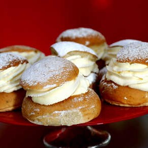
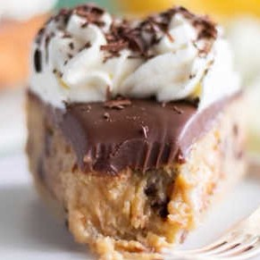

Layers of yellow squash, zucchini, eggplant, potato, and bell pepper on a bed of flavorful tomato and béchamel sauce... for a comforting veggie dinner
En gammal klassiker som semlor måste man bara prova att baka. För de hembakade blir väl ändå godast? Får du inte tag på extra bagerivetemjöl går det lika bra med vetemjöl special.
"Har du övermogna bananer hemma som du vill göra något gott av? Då tycker jag att du ska baka min banankladdkaka! En kladdig härlighet utan kakao med banan och bitar av choklad. Och eftersom att jag älskar att lyxa till det så är den också toppad med mjölkchokladganache och vispad grädde.

En snabb och god vardagsfavorit med krämig sås som får lite sötma från honung och syra från lime, perfekta smakkompisar till lax!
Vi vill bara påminna om hur gott och fräscht det är med sallad. Denna sallad, med grekisk inspiration, är dessutom vacker!

Sparrissallad med grillad ost och härliga smaker av medelhavet. Balsamico, timjan och nötter på toppen gör salladen till ett mästerverk.